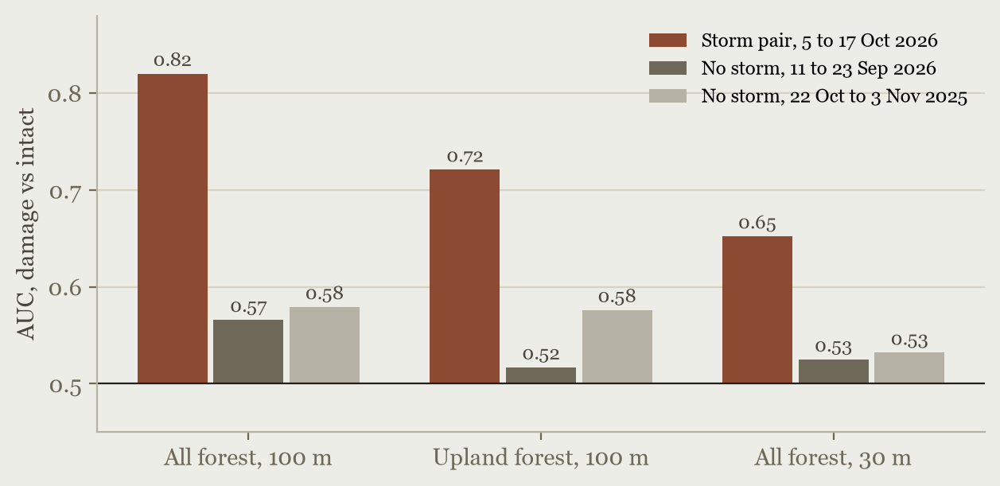
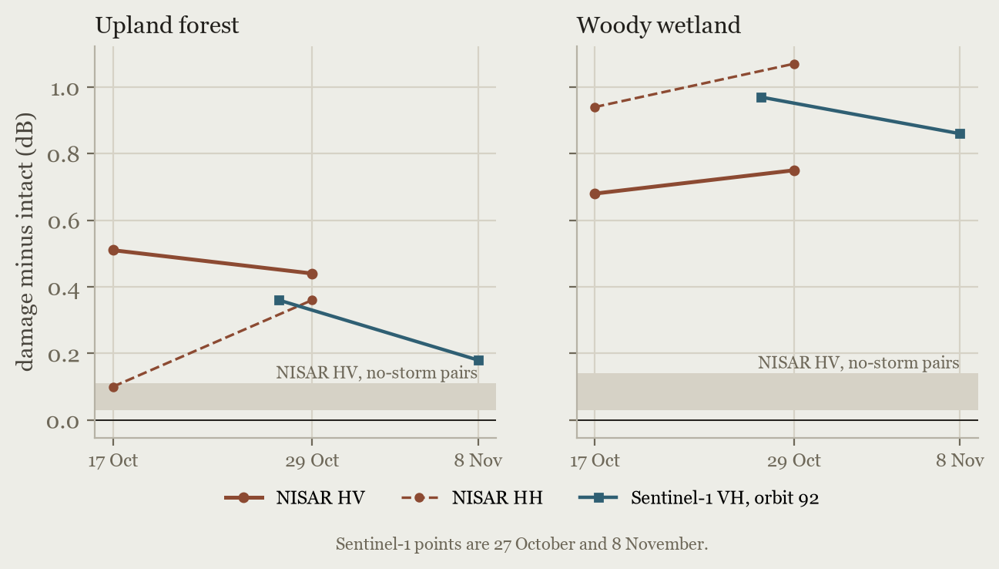
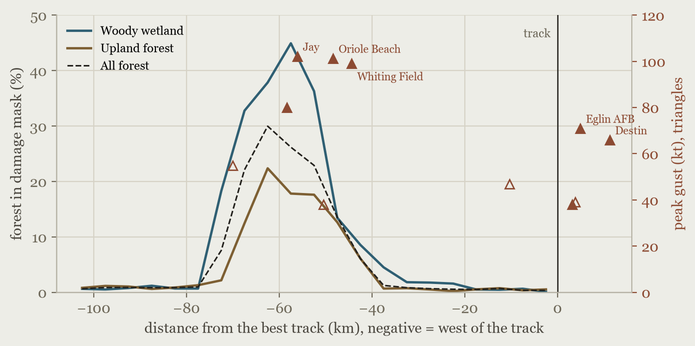

A comparison of NISAR's L-band radar with Europe's Sentinel-1 over the pine and bottomland forest of the western Florida Panhandle and south Alabama, a month after the October 2026 landfall. The test was fixed in writing before any model saw the held-out area, and that area stays sealed until it has been labelled by hand.
Hurricane Isaias came ashore near Destin, Florida, at about 8:30 in the evening of 9 October 2026, a Category 2 storm with 105 mph winds, and weakened fast as it moved north into Alabama. NWS Mobile's post-storm report lists the highest land gusts at Jay, Florida (102.2 kt, a University of Florida FAWN station), Oriole Beach (101.3 kt) and Whiting Field South (99 kt).
The best track shows the centre crossing the coast between Fort Walton Beach and Destin and running almost due north along 86.5°W, past Crestview and Andalusia. It was down to a 45 kt low by 1 a.m. local time and extratropical over central Alabama by morning. The forest damage lies well to the west of that line, which is the subject of the wind section below.
The Alabama Forestry Commission's preliminary aerial survey on 13 October estimated more than 2.5 million tons of timber damaged, worth more than $33.5 million, in Conecuh, Escambia and Monroe counties. The Florida Forest Service's preliminary report put Florida's damaged timber at about $30 million across five counties, most of it in Santa Rosa. Both agencies say ground surveys are still needed.
Sources: NWS Mobile post-tropical cyclone report (updated 23 October); Alabama Forestry Commission estimate, as reported by WALA FOX10; Florida Forest Service estimate, via UF/IFAS Florida Land Steward Update (30 October); track from the NHC operational best track.
NISAR, the NASA and ISRO radar satellite launched in 2025, sees the ground at L-band, a wavelength of about 24 cm. That is long enough to pass through leaves and scatter off trunks and large branches, which is what changes when a stand is knocked down. Sentinel-1 works at C-band, about 5.5 cm, and mostly sees the canopy surface.
So the question is plain: does NISAR's before-and-after change map the blowdown better than Sentinel-1's, and at what resolution? Radar sees through cloud and works at night, so if it works it can map damage days after a storm, when optical satellites are still blind.
The reference is a provisional damage mask from Sentinel-2 optical imagery. A 20 km stretch of the damage band and the strip under NOAA's aerial survey are held out: nothing in them has been used to build, tune or check any model, and they will be scored once, against labels drawn by hand.
Radar differences are after minus before in decibels, scaled from −2 dB (blue) to +2 dB (red), with each layer's forest-wide median removed; red means brighter after the storm. NDVI runs from −0.25 (brown, greenness lost) to +0.25. Forest only, about 64 m pixels. The grey blocks are the held-out area and the aerial strip, left blank until scoring.
NISAR HV is the mean of an ascending and a descending track; Sentinel-1 VH is the mean of two ascending orbits, using October images only so its timing matches NISAR's. Sentinel-2 true colour is a cloud-masked median of 1 September to 8 October and of 11 October to 9 November. Basemap © OpenStreetMap contributors. Turning on the before/after view switches the change layers off so the imagery shows; they can be turned back on.
A radar change map can light up for reasons that have nothing to do with wind: rain, a wet season, a field harvested. So NISAR's change across the storm was set against NISAR's change over two 12-day windows with no storm in them.

How well NISAR HV change on one ascending track separates damaged from intact forest (0.5 is chance), for the 12 days across the storm and for two 12-day windows with no storm, with the held-out areas left out. Upland means blocks that are at least 90 per cent pine or hardwood on ground more than 5 m above the nearest stream.
Across the storm, NISAR HV scores 0.82 at 100 m resolution. The two no-storm windows score 0.57 and 0.58, so roughly three quarters of the separation above chance comes from the storm. On upland forest, where floodwater cannot pool, it still scores 0.72 against 0.52 and 0.58. NISAR's HH channel carries no detectable storm signal on upland forest. These numbers leave out the held-out stretch and the aerial strip; with them included, the earlier analysis gave 0.83 against 0.54 and 0.57.
Against Sentinel-1 with images matched in time, NISAR's ascending track does better at 100 m (0.84 against 0.80, held-out areas excluded) but the two NISAR tracks averaged together only tie, because the descending track is weak over pine.
Isaias dropped up to 11 inches of rain. In bottomland forest, standing water under the trees also brightens radar, and it would look a lot like damage. Water drains; fallen trees stay down. So the test is whether the signal holds over time.

Mean radar change in damaged forest minus intact forest at 30 m, by date after the storm, with the held-out areas left out. The grey band is NISAR HV over the two no-storm windows.
On upland forest, NISAR HV fades only slightly from 17 to 29 October (+0.51 to +0.44 dB), far above the no-storm windows, which looks more like structure than water. In woody wetland, both NISAR channels grow instead of fading, led by HH (+0.94 to +1.07 dB), which is also what lasting floodwater under the canopy would do. There, downed trees and water cannot be told apart from these data. Sentinel-1 fades more on upland (+0.36 to +0.18 dB) than in wetland (+0.97 to +0.86 dB), the opposite of a simple drying pattern. Held-out areas are excluded throughout, and NISAR's 29 October scene comes from a newer processor (see Methods).
A northward-moving hurricane usually does its worst damage right of the track, near landfall. Here the damage sits 45 to 75 km west of the track, on its left.

Share of forest in the Sentinel-2 damage mask by distance from the NHC best track, in 5 km bins, with the held-out areas left out. Triangles are station peak gusts; hollow ones reported fewer than ten times during the storm and may have failed.
The damaged share of forest peaks at 30 per cent 60 to 65 km west of the track, and at 45 per cent in woody wetland. The three strongest gusts, at Jay, Oriole Beach and Whiting Field, are all 44 to 56 km west. Stations at or just right of the track near landfall that kept reporting peaked lower: 71 kt at Eglin and 66 kt at Destin. NHC's own analysis put hurricane-force winds about 37 to 46 km out on the west side and 56 km on the east, so the damage band sits at and just beyond the western edge of the analysed hurricane-force winds. The study area was drawn around the damage band and ends at the track, so damage east of it was never mapped, and why the strongest gusts fell on the left is not established.
Five ways of mapping the damage are compared on a sealed 20 km stretch of the band: simple thresholds on NISAR (A) and Sentinel-1 (B), and models trained on NISAR alone (C), Sentinel-1 alone (D), and both (E). The models come in two versions: v1 as first designed, and v2 after a documented change to the training labels (see Methods). All were frozen and their files hashed before scoring.
| Arm | Upland AUC | Wetland AUC | F1, damaged |
|---|---|---|---|
| A NISAR HV threshold | Scored after held-out labeling | ||
| B Sentinel-1 VH threshold | Scored after held-out labeling | ||
| C NISAR model, v1 | Scored after held-out labeling | ||
| C NISAR model, v2 | Scored after held-out labeling | ||
| D Sentinel-1 model, v1 | Scored after held-out labeling | ||
| D Sentinel-1 model, v2 | Scored after held-out labeling | ||
| E both sensors, v1 | Scored after held-out labeling | ||
| E both sensors, v2 | Scored after held-out labeling | ||
550 cells, 400 in the held-out stretch and 150 under the NOAA aerial survey, are waiting to be labelled by hand from before-and-after imagery. The scores above will be filled in once, all of them, including any that go against NISAR.
The damage mask comes from Sentinel-2 greenness and burn-ratio change against the same weeks of 2025, with clearcuts and salvage flagged out. There is no field or aerial truth inside the damage band yet, and the hand labels are drawn from the same Sentinel-2 imagery, so agreement with them is partly agreement with Sentinel-2.
The first models scored 0.97 to 0.9996 AUC on validation tiles, but the training labels pitted clear damage against clean intact forest and left out the cells in between. On the cut that mirrors the held-out sample, inside the band, damage against all other forest, they scored 0.63 to 0.78, and the simple thresholds 0.55 to 0.61.
About 93 to 95 per cent of the out-of-mask cells in the hand-label sample were cell types the first models never saw. Before any model was scored on the held-out area and before labeling began, a written amendment added v2 models trained on every forest cell. v1 stays frozen; both will be scored side by side.
NISAR's newest scene (29 October) comes from a newer processor and sits about 0.6 dB lower in HV and 1 dB in HH. The 2025 no-storm scenes come from an older one and sit about 2 dB lower in HV. Each layer's forest-wide median is removed, which takes out uniform offsets but not uneven ones.
The Jay gust against raw FAWN data (the public file has no gusts); the location and data of the Oriole Beach StickNet; damage east of the track; floodwater against structure in woody wetland; and the size of the selection advantage v2 gained by being tuned on the in-band cut.